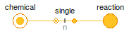
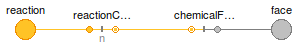

Table of Contents
- User's Guide
- Blocks
- Conditions
- Assemblies
- Regions
- Subregions
- Phases
- Species
- Connectors
- Characteristics
- Units
- Quantities
- Utilities
- Icons
Download
- Latest version (**Empty; please check back soon or contact kdavies4 at gmail.com.)

| Name | Description |
|---|---|
| Adapter between the Amagat and Dalton connectors | |
| ChemicalFace | Adapter between the Chemical and Face connectors |
| ChemicalReactionMulti | Adapter between multiple Chemical connectors and a Reaction connectors |
| ChemicalReaction | Adapter between the Chemical and Reaction connectors |
| FaceReaction | Adapter between the Reaction and Face connectors |
| Adapters to the Modelica Standard Library |
 FCSys.Conditions.Adapters.AmagatDalton
FCSys.Conditions.Adapters.AmagatDalton

This model is used to convert between the representation of mixtures with Amagat's law of partial volumes and Dalton's law of partial pressures.
For more information, please see the documentation in the Connectors package.
Extends from FCSys.Icons.Names.Top1.
| Type | Name | Description |
|---|---|---|
| Amagat | amagat | Connector for additivity of volume |
| Dalton | dalton | Connector for additivity of pressure |
model AmagatDalton "Adapter between the Amagat and Dalton connectors" extends FCSys.Icons.Names.Top1; FCSys.Connectors.Amagat amagat "Connector for additivity of volume"; FCSys.Connectors.Dalton dalton "Connector for additivity of pressure"; equation // Static balances 0 = amagat.p + dalton.p "Pressure"; 0 = amagat.V + dalton.V "Volume"; end AmagatDalton;
This model is used to determine the electrochemical potential available in a species at a boundary. The potential is the sum of chemical and electrical parts. The current across the boundary is due entirely to the electrochemical reaction.
Assumptions:
For more information, please see the documentation in the Connectors package.
Extends from FCSys.Icons.Names.Top1.
| Type | Name | Default | Description |
|---|---|---|---|
| Geometry | |||
| Area | A | Cross-sectional area of the face [l2] | |
| Axis | axis | Axis of the electrochemical reaction | |
| Side | side | Side of the face w.r.t., the reaction | |
| Integer | cartTrans[:] | Cartesian-axis indices of the components of translational momentum | |
| Type | Name | Description |
|---|---|---|
| Face | face | Interface to the majority region |
| Chemical | chemical | Connector for a species in a chemical reaction |
model ChemicalFace "Adapter between the Chemical and Face connectors" import FCSys.Utilities.cartWrap; import FCSys.Utilities.inSign; extends FCSys.Icons.Names.Top1; // Geometry parameter Q.Area A "Cross-sectional area of the face"; parameter Axis axis "Axis of the electrochemical reaction"; parameter Side side "Side of the face w.r.t., the reaction"; parameter Integer cartTrans[:] "Cartesian-axis indices of the components of translational momentum"; replaceable package Data = Characteristics.BaseClasses.Characteristic constrainedby Characteristics.BaseClasses.Characteristic "Characteristic data"; // Aliases (for common terms) Q.PressureAbsolute p(start=Data.p0) "Thermodynamic pressure"; // Auxiliary variables (for analysis) output Q.Potential zw(stateSelect=StateSelect.never) = inSign(side)*face.mPhidot[ Orient.normal]/(face.rho*A) "Inward nonequilibrium potential"; Connectors.Face face "Interface to the majority region"; Connectors.Chemical chemical(final n_trans=n_trans) "Connector for a species in a chemical reaction"; protected final parameter Integer n_trans=size(cartTrans, 1) "Number of components of translational momentum"; equation // Aliases p = Data.p_Tv(face.T, 1/face.rho); // No diffusion across the face face.Ndot = 0 "Material"; face.mPhidot[2:3] = {0,0} "Transverse translational momentum"; face.Qdot = 0 "Energy"; // Equal intensive properties chemical.mu = Data.h(face.T, p) - chemical.sT + inSign(side)*face.mPhidot[ Orient.normal]/(face.rho*A) "Electrochemical potential"; chemical.phi = {face.phi[cartWrap(i - axis + 1)] for i in cartTrans} "Velocity"; chemical.sT = Data.s(face.T, p)*face.T "Specific entropy-temperature product"; // Material conservation (without storage) 0 = chemical.Ndot + inSign(side)*face.phi[Orient.normal]*A*face.rho; // The conservation of translational momentum and energy is inherent // in the stream connector. end ChemicalFace;

This model is used to add the stoichiometrically weighted chemical potential of a species to the net chemical potential of a reaction. Meanwhile, the species is produced at the stoichiometrically weighted rate of the reaction.
For more information, please see the documentation in the Connectors package.
Extends from FCSys.Icons.Names.Top1.
| Type | Name | Default | Description |
|---|---|---|---|
| Integer | n_trans | Number of components of translational momentum | |
| Integer | n[n_spec] | Stoichiometric coefficients | |
| Material properties | |||
| MassSpecific | m[n_spec] | Specific masses [m/N] | |
| Type | Name | Description |
|---|---|---|
| Chemical | chemical[n_spec] | Connector for species in a chemical reaction |
| Reaction | reaction | Connector for an electrochemical reaction |
model ChemicalReactionMulti "Adapter between multiple Chemical connectors and a Reaction connectors" extends FCSys.Icons.Names.Top1; parameter Integer n_trans(min=1,max=3) "Number of components of translational momentum"; parameter Integer n_spec=1 "Number of species"; parameter Integer n[n_spec] "Stoichiometric coefficients"; parameter Q.MassSpecific m[n_spec] "Specific masses"; Connectors.Chemical chemical[n_spec](each final n_trans=n_trans) "Connector for species in a chemical reaction"; Connectors.Reaction reaction(final n_trans=n_trans) "Connector for an electrochemical reaction"; Conditions.Adapters.ChemicalReaction single[n_spec]( each final n_trans=n_trans, final n=n, final m=m); equation connect(single.chemical, chemical); for i in 1:n_spec loop connect(single[i].reaction, reaction); end for; end ChemicalReactionMulti;

This model is used to add the stoichiometrically weighted chemical potential of a species to the net chemical potential of a reaction. Meanwhile, the species is produced at the stoichiometrically weighted rate of the reaction.
For more information, please see the documentation in the Connectors package.
Extends from FCSys.Icons.Names.Top1.
| Type | Name | Default | Description |
|---|---|---|---|
| Integer | n_trans | Number of components of translational momentum | |
| Integer | n | Stoichiometric coefficient | |
| Material properties | |||
| MassSpecific | m | Specific mass [m/N] | |
| Type | Name | Description |
|---|---|---|
| Chemical | chemical | Connector for a species in a chemical reaction |
| Reaction | reaction | Connector for an electrochemical reaction |
model ChemicalReaction "Adapter between the Chemical and Reaction connectors" extends FCSys.Icons.Names.Top1; parameter Integer n_trans(min=1,max=3) "Number of components of translational momentum"; parameter Integer n "Stoichiometric coefficient"; parameter Q.MassSpecific m "Specific mass"; // Auxiliary variables (for analysis) output Q.Velocity phi_actualStream[n_trans](each stateSelect=StateSelect.never) = actualStream(chemical.phi) if environment.analysis "Velocity of the actual stream"; output Q.PotentialAbsolute sT_actualStream(stateSelect=StateSelect.never) = actualStream(chemical.sT) if environment.analysis "Specific entropy-temperature product of the actual stream"; Connectors.Chemical chemical(final n_trans=n_trans) "Connector for a species in a chemical reaction"; Connectors.Reaction reaction(final n_trans=n_trans) "Connector for an electrochemical reaction"; protected outer Conditions.Environment environment "Environmental conditions"; equation // Equal intensive properties reaction.mu = n*chemical.mu "Chemical potential"; reaction.phi = chemical.phi "Velocity"; reaction.sT = chemical.sT "Specific entropy-temperature product"; // Conservation (without storage) 0 = chemical.Ndot + n*reaction.Ndot "Material"; zeros(n_trans) = m*actualStream(chemical.phi)*chemical.Ndot + reaction.mPhidot "Translational momentum"; 0 = actualStream(chemical.sT)*chemical.Ndot + reaction.Qdot "Energy"; end ChemicalReaction;

This model is used to determine the electrochemical potential available in a species at a boundary. The potential is the sum of chemical and electrical parts. The current across the boundary is due entirely to the electrochemical reaction.
Assumptions:
For more information, please see the documentation in the Connectors package.
Extends from FCSys.Icons.Names.Top1.
| Type | Name | Default | Description |
|---|---|---|---|
| Integer | n | Stoichiometric coefficient | |
| Geometry | |||
| Area | A | Cross-sectional area of the face [l2] | |
| Axis | axis | Axis of the electrochemical reaction | |
| Side | side | Side of the face w.r.t., the reaction | |
| Integer | cartTrans[:] | Cartesian-axis indices of the components of translational momentum | |
| Type | Name | Description |
|---|---|---|
| Face | face | Interface to the majority region |
| Reaction | reaction | Connector for an electrochemical reaction |
model FaceReaction "Adapter between the Reaction and Face connectors" import FCSys.Utilities.inSign; extends FCSys.Icons.Names.Top1; // Geometry parameter Q.Area A "Cross-sectional area of the face"; parameter Axis axis "Axis of the electrochemical reaction"; parameter Side side "Side of the face w.r.t., the reaction"; parameter Integer cartTrans[:] "Cartesian-axis indices of the components of translational momentum"; parameter Integer n "Stoichiometric coefficient"; replaceable package Data = Characteristics.BaseClasses.Characteristic constrainedby Characteristics.BaseClasses.Characteristic "Characteristic data"; // Auxiliary variables (for analysis) output Q.Potential zw(stateSelect=StateSelect.never) = inSign(side)*face.mPhidot[ Orient.normal]/(face.rho*A) "Inward nonequilibrium potential"; Connectors.Face face "Interface to the majority region"; Connectors.Reaction reaction(final n_trans=n_trans) "Connector for an electrochemical reaction"; ChemicalFace chemicalFace( final axis=axis, final side=side, final cartTrans=cartTrans, redeclare final package Data = Data, final A=A); ChemicalReaction reactionChemical( final n_trans=n_trans, final n=n, final m=Data.m); protected final parameter Integer n_trans=size(cartTrans, 1) "Number of components of translational momentum"; equation connect(reactionChemical.chemical, chemicalFace.chemical); connect(reactionChemical.reaction, reaction); connect(chemicalFace.face, face); end FaceReaction;